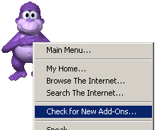
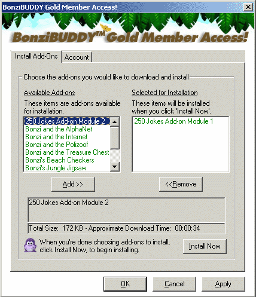
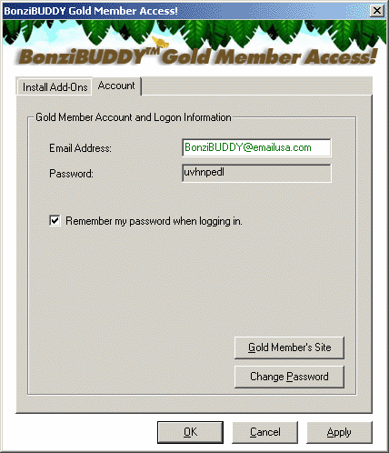

<meta charset="utf-8">  <table border="0" cellpadding="0" cellspacing="0" width="100%">
    <tr>
      <td>
        <table border="1" width="100%">
          <tr>
            <td width="100%" bgcolor="#54688D">
              <p align="center"><font size="3" face="Arial" color="#FFFFFF"><b>BonziBUDDY™
              GOLD Membership User's Guide</b></font></td>
          </tr>
        </table>
        <p>&nbsp;</p>
      <blockquote>
        <p align="left"><font face="Arial">Once you're a <b><font color="#800080"> BonziBUDDY™ Gold
        Member</font></b> you will have access to all of Bonzi's current add-on modules as
        well as any new modules that are developed while you're a member.&nbsp;
        To access the Gold Members Page, right-click on Bonzi's tummy and choose
        Check For New Add-Ons, as shown below (you must&nbsp; be actively
        connected to the Internet to access the Gold Members sections of
        Bonzi's features):</font></p>
      </blockquote>
  <center>
        <p align="center"></p>
  </center>
      <blockquote>
        <p align="left"><font face="Arial">After you click on Check for New
        Add-Ons, you will either be asked for your Gold Member ID and password,
        or you will see the Gold Member Access screen appear.&nbsp; If you are
        asked for your ID and password, look at your Invoice Summary page and
        find your ID and password underneath the table that shows the amount of
        your purchase.&nbsp; Input your ID and password exactly as they appear
        on your invoice (the password especially, because it is case-sensitive)
        and click OK.&nbsp; At this point you will be taken to the Gold Member
        Access page.</font></p>
        <p align="center"><font face="Arial" color="#800080"><b>Gold Member
        Access</b></font></p>
        <p align="left"><font face="Arial">Once you are on the Gold Member
        Access page, you will see that there are two tabs.&nbsp; You will be on
        the <b> Install Add-Ons</b> tab when this screen first appears, as shown below:</font></p>
      </blockquote>
  <center>
        <p class="MsoEnvelopeReturn" align="center"></p>
  </center>
      <blockquote>
        <p align="left"><font face="Arial">If this page is blank, with no
        modules listed, one of two things is true: either you have already
        installed all of the add-on modules or you are not correctly logged into
        the Gold Member Access page.&nbsp; If you are not correctly logged in,
        see the information below about the Account tab.</font></p>
        <p align="left"><font face="Arial">This is the screen from which you
        choose to download BonziBUDDY™ add-on modules you would like to use.&nbsp;
        If you have a slow Internet connection, we suggest installing only one
        or two modules at a time.&nbsp; If you have cable or DSL or a faster
        Internet connection, feel free to choose as many of the add-on modules
        as you would like.</font></p>
        <p align="left"><font face="Arial">When you find a module you would like
        to install, just highlight the module in the list on the left and click
        the <b> ADD</b> button.&nbsp; This will put the selected module in the list on
        the right, and get it ready for download.&nbsp; Once you have your
        selected module(s) in the list on the right, just click on the <b> Install
        Now</b> button to start the installation of those modules.</font></p>
        <p align="center"><font face="Arial" color="#800080"><b>Account Tab</b></font></p>
        <p align="left"><font face="Arial" color="#000000">If you need to know
        what your ID and password are, or if you are not being shown any add-ons
        to download on the Install Add-Ons tab, you will need to click on the <b>
        Account</b> tab.&nbsp; The Account tab looks like this:</font></p>
      </blockquote>
  <center>
        <p class="MsoEnvelopeReturn" align="center"></p>
  </center>
      <blockquote>
        <p class="MsoEnvelopeReturn" align="left"><font face="Arial" color="#000000">This
        tab shows you your ID and password and allows you to set Bonzi to save
        your password so that you don't have to enter it every time you log
        in.&nbsp; There is also a link at the bottom to the Gold Member's
        Site.&nbsp; The Gold Member's Site is where to go if you want to send us
        a Priority Technical Support message or learn more about each of the
        add-on modules.&nbsp; There is also a link to a page where you can
        change your password, but at this time, that link does not work.&nbsp;
        We will soon have the ability to let you change your password to
        anything that you would like to use.</font></p>
        <p style="margin-left: 0.0in" align="left"><font face="Arial">If you
        have any further questions about this product or need technical help,
        please visit us on the web at <a href="bonzi-page-64.html">http://www.bonzi.com/support.htm</a>.<span style="mso-spacerun: yes">&nbsp;
        You can also use the Account tab or the Gold Member Access section of
        Bonzi's main menu screen to access your Priority Support options.&nbsp; </span>We look forward to
        hearing from you!</font></p>
        <p align="left"><font face="Arial">Sincerely,</font></p>
        <p style="word-spacing: 0; line-height: 100%; margin-top: 0; margin-bottom: 0" align="left"><b><font face="Arial">The
        BONZI Software Customer Support Team<o:p>
        </font></b></p>
  <center>
        <p class="MsoEnvelopeReturn" style="word-spacing: 0; line-height: 100%; margin-top: 0; margin-bottom: 0">&nbsp;</p>
        </blockquote>
        <p class="MsoEnvelopeReturn" style="margin-left:.5in">&nbsp;<o:p>
        </o:p>
      </td>
    </tr>
  </table>